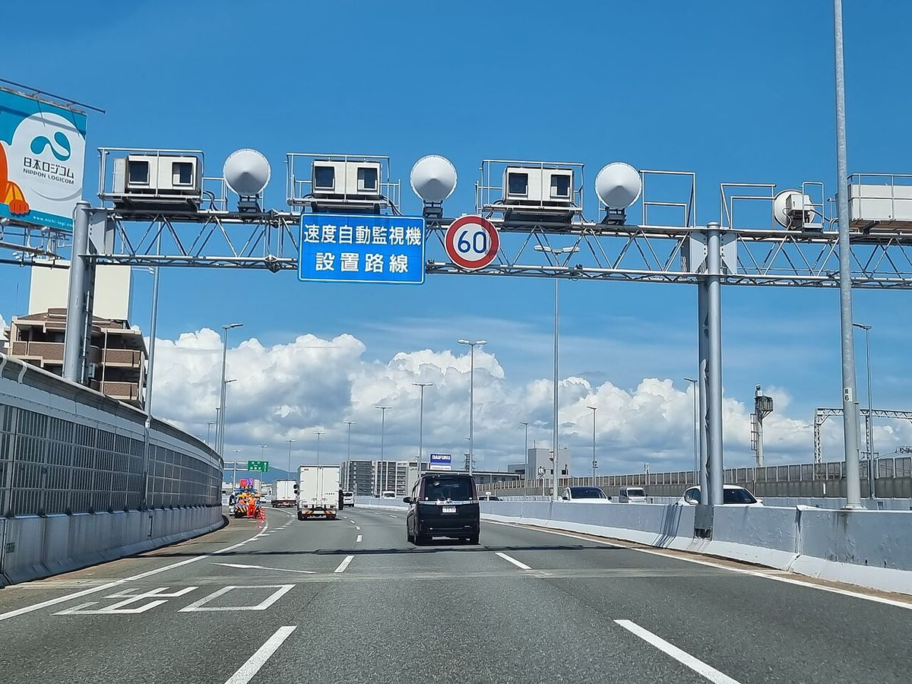

Kamu bisa cek tilang ETLE online lewat situs resmi Korlantas Polri di konfirmasi-etle.polri.go.id. Siapkan STNK, masukkan nomor polisi, nomor mesin, dan nomor rangka, lalu klik Cek Data. Hasilnya langsung muncul: bersih atau tercatat melanggar, lengkap dengan waktu dan lokasinya. Per November 2026, pengecekan ini gratis dan bisa dilakukan dari HP tanpa datang ke kantor polisi.
ETLE adalah singkatan Electronic Traffic Law Enforcement, sistem tilang elektronik yang memakai kamera di jalan untuk merekam pelanggaran lalu lintas. Kalau kendaraanmu terekam, datanya masuk ke sistem Korlantas Polri dan kamu wajib mengonfirmasi pelanggaran itu paling lambat 8 hari sejak pelanggaran terjadi. Pengecekan memakai tiga data dari STNK: nomor polisi, nomor mesin, dan nomor rangka. Untuk wilayah Polda Metro Jaya, situs etle-pmj.id juga bisa dipakai. Hasil cek menampilkan waktu, lokasi, jenis pelanggaran, dan bukti foto bila kendaraanmu tercatat melanggar. Kalau bersih, muncul keterangan tidak ada data pelanggaran. Sesudah konfirmasi, denda dibayar lewat Virtual Account BRI (BRIVA) atau lewat LantasPay di aplikasi Digital Korlantas. Uang yang dibayar di awal adalah uang titipan sebesar denda maksimal.
Kenapa cek tilang ETLE penting saat Operasi Zebra 2026?
Operasi Zebra 2026 digelar serentak mulai 16 sampai 29 November 2026. Selama 14 hari itu polisi menindak pelanggaran lewat tilang elektronik dan tilang manual. Masalahnya, surat konfirmasi pelanggaran dikirim ke alamat yang tercantum di data kendaraan. Kalau kamu sudah pindah rumah dan belum memperbarui alamat, surat itu bisa tidak pernah sampai, sementara batas konfirmasi tetap berjalan. Karena itu, cek mandiri adalah cara paling aman untuk memastikan kendaraanmu bersih. Kamu tidak perlu menunggu surat datang dan tidak perlu menebak-nebak apakah kamera sempat merekam pelanggaran di persimpangan kemarin. Cek mandiri hanya butuh beberapa menit dan hasilnya langsung terlihat di layar. Untuk tahu apa saja yang ditindak, baca daftar pelanggaran dan denda Operasi Zebra 2026.

Foto: Benlisquare, CC BY-SA 4.0, via Wikimedia Commons
Bagaimana cara cek tilang ETLE online lewat HP?
Ada tiga jalur resmi untuk cek tilang ETLE. Semuanya gratis dan memakai data yang sama dari STNK.
Lewat situs resmi, caranya begini:
- Buka konfirmasi-etle.polri.go.id di peramban HP atau komputermu.
- Masukkan nomor polisi kendaraanmu persis seperti di STNK.
- Masukkan nomor mesin dan nomor rangka, termasuk huruf di awal nomornya.
- Klik Cek Data dan tunggu hasil pencarian.
- Kalau bersih, muncul keterangan tidak ada data pelanggaran. Kalau tercatat melanggar, tampil waktu, lokasi, jenis pelanggaran, dan bukti foto.
Untuk wilayah hukum Polda Metro Jaya, konfirmasi juga dilayani di etle-pmj.id. Jalurnya sama, hanya alamat situsnya berbeda.
Lewat aplikasi Digital Korlantas Polri, caranya begini:
- Unduh aplikasi Digital Korlantas Polri dari toko aplikasi resmi.
- Cari dan pilih menu ETLE.
- Pilih Cek Tilang.
- Masukkan data kendaraan sesuai petunjuk di layar.
- Periksa hasilnya.
Jalur ketiga adalah Polri Super App. Unduh aplikasinya, daftar dan lengkapi profilmu, lalu pilih menu Tilang dan sub-menu ETLE. Masukkan data kendaraan yang sama, lalu tekan Cari.
Apa yang harus dilakukan kalau kendaraanmu tercatat melanggar?
Jangan panik dan jangan diabaikan. Pemilik kendaraan wajib mengonfirmasi pelanggaran paling lambat 8 hari sejak pelanggaran terjadi. Konfirmasi dilakukan lewat situs ETLE atau aplikasi Digital Korlantas dengan memasukkan nomor referensi pelanggaran, nomor polisi, dan nomor mesin. Sesudah konfirmasi, kamu punya waktu sampai 15 hari dari tanggal pelanggaran untuk membayar dendanya. Pembayaran paling umum memakai Virtual Account BRI (BRIVA). Kode BRIVA tercantum di surat konfirmasi atau di portal ETILANG, dan kamu bisa membayarnya lewat teller, ATM, atau BRImo. Sejak Oktober 2026, Korlantas juga menyediakan LantasPay di aplikasi Digital Korlantas. Caranya: buka notifikasi pelanggaran di aplikasi, pilih Lihat Detail Pelanggaran, lalu aktifkan LantasPay dengan menghubungkan nomor telepon, membuat PIN enam digit, memasukkan kode OTP, dan mengisi saldo. Uang yang kamu bayar di awal adalah uang titipan sebesar denda maksimal. Sesudah pengadilan memutus denda final, sisanya dikembalikan otomatis ke saldo LantasPay dan kamu diberi tahu lewat aplikasi. Untuk melihat status perkara, petunjuk pembayaran, dan jadwal sidang, buka portal ETILANG di etilang.polri.go.id dan masukkan nomor register tilang atau nomor blangko yang tertera di surat tilang.
Berapa denda tilang ETLE 2026?
Besaran denda tilang ETLE mengikuti Undang-Undang Nomor 22 Tahun 2009 tentang Lalu Lintas dan Angkutan Jalan. Ini denda maksimal untuk pelanggaran yang paling sering terekam kamera: tidak memakai helm standar Rp250.000, main HP saat berkendara Rp750.000, berkendara tanpa SIM Rp1.000.000, melawan arus Rp500.000, menerobos lampu merah Rp500.000, dan melebihi batas kecepatan Rp500.000. Ingat, angka di atas adalah denda maksimal menurut undang-undang, bukan jumlah yang pasti kamu bayar. Denda final diputus pengadilan dan biasanya lebih rendah dari angka maksimal. Satu hal yang perlu diluruskan: kabar bahwa denda tilang ETLE bertambah kalau telat dibayar adalah hoaks. Direktur Lalu Lintas Polda Metro Jaya Kombes Komarudin menegaskan denda tetap sesuai jenis pelanggaran. Yang benar-benar terjadi kalau kamu tidak mengonfirmasi dan tidak membayar adalah STNK-mu diblokir. Menurut Polda Metro Jaya, pemblokiran terjadi bila pemilik kendaraan tidak mengonfirmasi atau membayar dalam 16 hari sesudah surat konfirmasi diterima. Untuk membuka blokir, denda harus dilunasi dulu.
Foto: vipwin, CC BY-SA 4.0, via Wikimedia Commons
Situs tilang palsu yang harus kamu hindari
Satu alamat lama sebaiknya tidak lagi dipakai: etle-korlantas.info. Alamat itu dulu banyak disebarkan lewat artikel lama dan pesan berantai, tapi kini sudah tidak aktif dan dialihkan ke halaman pemblokiran. Jangan pernah memasukkan data STNK ke alamat itu atau ke domain yang mirip. Situs resmi hanya yang berakhiran polri.go.id, seperti konfirmasi-etle.polri.go.id dan etilang.polri.go.id, plus etle-pmj.id untuk wilayah Polda Metro Jaya. Kalau kamu menerima tautan cek tilang dari pesan singkat atau grup chat, jangan langsung diklik. Ketik sendiri alamat situsnya di perambanmu.
Intinya, cek tilang ETLE itu cepat, gratis, dan bisa dilakukan dari HP. Selama Operasi Zebra 2026 masih berjalan sampai 29 November, sempatkan cek kendaraanmu hari ini supaya tidak ada kejutan di kemudian hari. Kalau hasilnya bersih, kamu bisa berkendara dengan tenang. Kalau tercatat melanggar, konfirmasi dan bayarlah sebelum batas waktunya lewat supaya STNK-mu tidak diblokir. Butuh panduan lain seputar kendaraan? Lihat artikel Other lainnya.
Sumber dan Info Resmi
Angka dan tanggal di artikel ini merujuk ke sumber berikut:
- Allianz: cek ETLE lewat situs resmi dan aplikasi Polri Super App; data yang dimasukkan adalah nomor pelat, nomor mesin, dan nomor rangka.
- KlikFakta: batas konfirmasi maksimal 8 hari sejak pelanggaran; batas pembayaran maksimal 15 hari dari tanggal pelanggaran; pembayaran lewat BRIVA dan LantasPay; situs etle-pmj.id untuk DKI Jakarta.
- Ahmadweb: langkah cek di konfirmasi-etle.polri.go.id; etle-pmj.id untuk Polda Metro Jaya; alamat lama etle-korlantas.info sudah tidak aktif dan dialihkan ke halaman pemblokiran.
- Garuda TV: langkah cek lewat aplikasi Digital Korlantas Polri, menu ETLE lalu Cek Tilang, mengutip pemberitaan detikOto 12 Oktober 2026.
- Moladin: portal resmi konfirmasi-etle.polri.go.id dan etilang.polri.go.id; denda mengikuti Undang-Undang Nomor 22 Tahun 2009.
- GridOto: LantasPay di aplikasi Digital Korlantas untuk membayar uang titipan denda tilang ETLE.
- GridOto: aktivasi LantasPay, PIN enam digit dan kode OTP; uang yang dibayar di awal adalah uang titipan, denda final diputus pengadilan.
- Groove: klarifikasi Direktur Lalu Lintas Polda Metro Jaya Kombes Komarudin bahwa denda ETLE tidak bertambah meski telat dibayar; STNK diblokir bila tidak konfirmasi atau bayar dalam 16 hari sesudah surat konfirmasi diterima.
- Pranala: Operasi Zebra Mahakam 2026 digelar 16 sampai 29 November 2026; denda maksimal helm Rp250.000, main HP Rp750.000, tanpa SIM Rp1.000.000.
- Twaslnews: Operasi Zebra Lodaya 2026 digelar 16 sampai 29 November 2026; daftar denda maksimal per pasal, antara lain lawan arus Rp500.000, lampu merah Rp500.000, kecepatan Rp500.000.